4. 调整顺序：名单与最终部署一致
玩家看到“未在前十人”的提示后，能把后备终结角色实际调入。
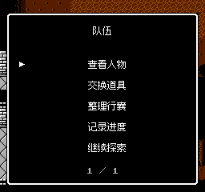
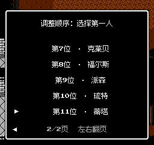

原偏差：原据点没有调整顺序入口，文字提示无法直接执行。
实际操作：选择队伍、带编号的第一名队员和交换对象；各领队保持首位。
检查结果：已修复；按每队前十名存活队员核对实际部署。
本轮对照运行画面、玩家意图、按键/鼠标输入与真实结果。所有截图在启动前禁止窗口与焦点的保护下，以原生256×240视口生成。
进入最终战前，让玩家知道多玛只能用法尔西昂或吸血终结。
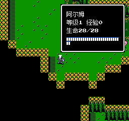
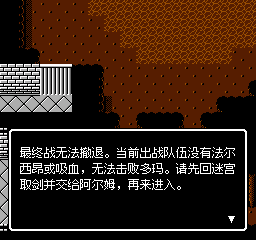
原偏差：修复前缺少终结手段也会进入无法撤退的最终战并自动保存。
实际操作：按门前提示取剑、整理行囊或调整真实前十名存活队员，然后再次走向门。
检查结果：已修复；保留原版多玛免疫与战斗撤退规则。
让旧最终战卡档能够继续准备，清楚说明会重置本战。
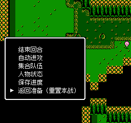
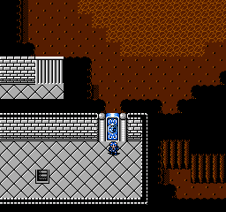
原偏差：原先继续或重试只能重复同一缺少终结手段的战斗。
实际操作：S菜单或战斗失败菜单选择“返回准备（重置本战）”；完整恢复开战快照，再从祭坛南侧继续探索。
检查结果：已修复；正常已准备最终战使用普通重试，此前阵亡与本战前道具不会被更改。
最终准备提示必须指向当前可操作的真实行囊。
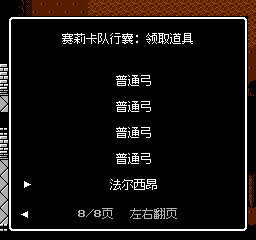
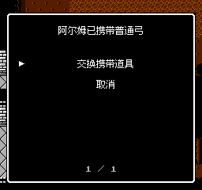
原偏差：信使可将唯一法尔西昂送进被捕队伍行囊，原本无法切队取回；仓库和领取者满时也需可操作。
实际操作：第五章阿尔姆在最终祭坛的队伍菜单进入双方整备，选行囊、道具及领取者；已有道具时明确选择交换。
检查结果：已修复；交换把旧道具放回原行囊槽，保留数量、容量和捕获状态。
玩家看到“未在前十人”的提示后，能把后备终结角色实际调入。


原偏差：原据点没有调整顺序入口，文字提示无法直接执行。
实际操作：选择队伍、带编号的第一名队员和交换对象；各领队保持首位。
检查结果：已修复；按每队前十名存活队员核对实际部署。
被捕赛莉卡队也可在此调整：提示、实际后备选择与顺序结果。
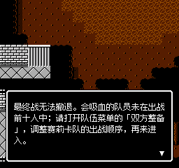
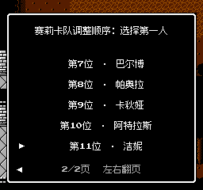
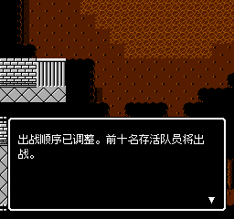
查看当前关注人物的属性。
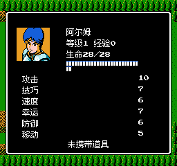
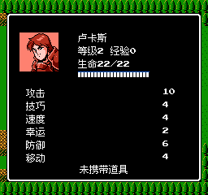
原偏差：原系统菜单总是显示主将。
实际操作：光标停在友军或敌军后，S菜单选择人物状态；Tab/A查看同一对象。
检查结果：已修复；空地回退主将。
确认“将谁传送到哪一格”。
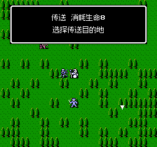
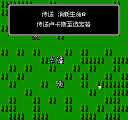
原偏差：原落点页只显示目的地提示，隐藏所选角色。
实际操作：选邻接队友，移动到合法落点，核对姓名后确认；取消和占用落点不会消耗行动。
检查结果：已修复；当前姓名与实际support_target和落点结算一致。
快速查看多页人物或道具。
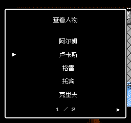
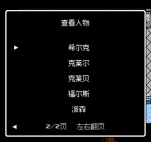
原偏差：原右箭头只移动一条，仍留在第一页。
实际操作：左右键或底部箭头翻页，上下键逐条选择。
检查结果：已修复；页码、可见行和选择对象同步。
理解战斗为何结束，或为什么不能继续选择第二名队员。
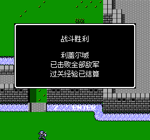
原偏差：原投降结果声称击败全部士兵；空名单会直接消失，让后续确认误进入世界地点。
实际操作：鲁道夫结果显示敌军投降；单人队伍交换/调整顺序给出没有其他队员提示并保留整备菜单。
检查结果：已修复。
范围限制：这些源表里程碑与截图不等于后期每关自然通关，也不构成完整无障碍合规声明。11组相关检查共1960项通过，36张运行截图验收通过。完整交付记录见同目录 round5-review-completion.json。